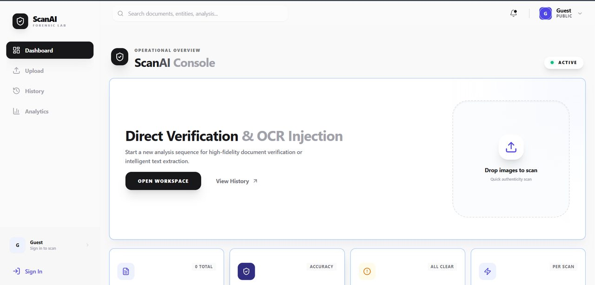
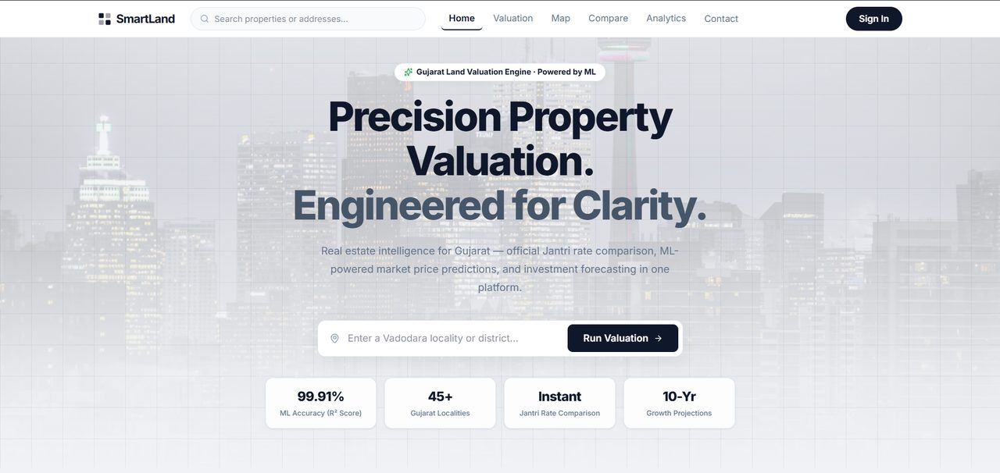
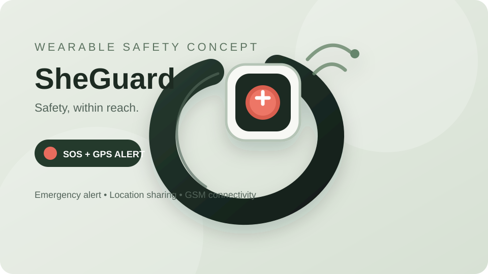
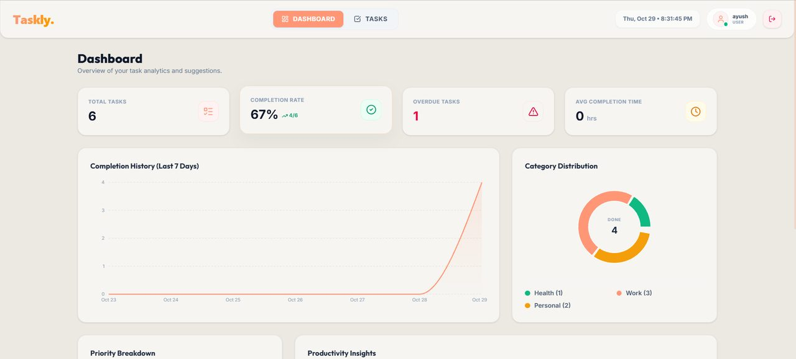

AI · Computer vision · OCR01 / 04

ScanAI
A full-stack image verification and OCR platform combining computer vision, OCR, and NLP to extract and cross-validate document data, then return an authenticity confidence score.
I'm Ayush Machhi — an AI/ML-focused developer who builds full-stack applications and practical machine-learning solutions. I enjoy taking ideas from data and models to usable products.

I'm pursuing a Bachelor of Technology in Computer Science and Engineering at Parul University, Vadodara. My work sits at the intersection of applied AI, machine learning, and full-stack development.
I've worked on projects involving image verification, OCR, NLP, predictive modelling, and data-driven dashboards. I like understanding the problem first, preparing and evaluating the data carefully, then building an interface and API that make the result useful.
I'm currently looking for opportunities where I can contribute as an early-career AI/ML or full-stack developer while learning from strong engineering teams.
Understand the user need and turn it into a clear technical approach.
Connect data, models, APIs, databases, and interfaces into usable products.
Evaluate results, learn from limitations, and improve through testing.
A selection of projects across applied AI, machine learning, and product development. Each one is an opportunity to solve a real problem and learn by building.

A full-stack image verification and OCR platform combining computer vision, OCR, and NLP to extract and cross-validate document data, then return an authenticity confidence score.

A land valuation platform that predicts property prices from historical land-sale data and features such as location, area, and amenities, with an interactive React dashboard.

A phone-independent wearable safety concept designed to trigger an SOS message, emergency call, and GPS location sharing. Developed as a first working prototype and incubated at PIERC Cohort 9.

A productivity dashboard for tracking tasks, overdue work, completion rates, weekly activity, and category distribution through interactive analytics.
Project performance figures are not displayed unless verified. Model accuracy and benchmark metrics can be added after evaluation on a documented test dataset.
My current toolkit spans programming, data analysis, machine learning, frontend and backend development.
Python · SQL · C · JavaScript · Pandas · NumPy · Matplotlib · Data cleaning · EDA · Data validation
Scikit-learn · TensorFlow · Regression · Classification · Feature engineering · Model evaluation · OCR · Computer vision · NLP
React.js · HTML5 · CSS3 · Tailwind CSS · FastAPI · Node.js · Express.js · REST APIs
MongoDB · MySQL · Git · GitHub · Jupyter Notebook · Google Colab · VS Code · Postman
Learning through internships, academic work, startup building, and collaborative challenges.
Built and trained regression and classification models using Python and Scikit-learn. Worked across data cleaning, preprocessing, exploratory data analysis, model evaluation using accuracy, precision, recall and confusion matrices, hyperparameter tuning, and visualization with Matplotlib.
Developing a wearable emergency safety device designed to work independently of a smartphone. Selected for SSIP grant support. The project is at prototype stage; formal user and performance results are not claimed.
Collaborated with a team to design and develop a software solution under time constraints.
Building a foundation in computer science, programming, software development, and machine learning through coursework and hands-on projects.
Internships, technical learning, and innovation milestones. Select any certificate to view it at full size.
SystemTron · 4 weeks
SystemTron · 4 weeks
Udemy · Hitesh Choudhary
Certificate of acknowledgement · ISRO
Selected for the Pre-Incubation Program · PIERC, Parul University
LetsUpgrade · 3 days
I'm open to AI/ML and full-stack opportunities, collaborations, and conversations about building useful technology. If you think we could work together, I'd love to hear from you.
Vadodara, Gujarat, India
Prefer a quick message? Email is the best way to reach me.